id="js_content" style="">
这是一条小鱼的故事，它生活的那片海里来了鲨鱼
——卓别林
卓别林不仅仅是默片喜剧之王，更是最有勇气、最敢讲真话的艺术家。
1940年，德国纳粹占领法国，此时正是希特勒最为嚣张得意的时候，卓别林却创作了《大ducai者》大肆讽刺希特勒的ducai统治，表现了犹太人被迫害的悲惨状况。
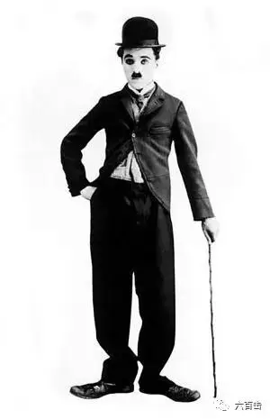
所以，纳粹一直视卓别林为眼中钉，骂他是“一个小犹太杂耍艺人，既沉闷又恶心”。
而此时，美国还未对德国宣战，双方还是处于一种相对友好的关系中，所以卓别林不仅面临被纳粹暗杀的威胁，他也同时受到美国国内很多政治势力的攻击。
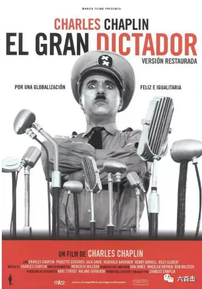
除了政治压力，《大独裁者》并不是小成本制作，需要很大的资金投入，但这都阻止不了卓别林的决心，他自掏腰包投入两百万来制作影片。
最终《大ducai者》大获成功，票房、口碑双丰收，本片荣获第13届（1941）奥斯卡最佳电影、最佳男主角、最佳男配角、最佳编剧、最佳音乐5项提名。
虽然《大ducai者》无法企及《摩登时代》和《城市之光》的艺术高度，但是在那个对暴政纵容、沉默的时代，这部电影绝对是最具道德勇气的伟大作品。
正如卓别林以往的作品，电影的故事情节并不复杂，精华和看点都在卓别林的表演和充满嘲讽和隐喻的镜头中，本片也是卓别林第一部有声片，更加增添了不同往常的艺术表现。
卓别林一人饰演两个角色，我们既能够看到肥裤子、破礼帽、小胡子、大头鞋的夏尔罗形象，又能看到“卓别林”特色下的希特勒形象。
电影虚构了一个国家，叫做托曼尼亚，这个王国的的统治者辛格尔（卓别林饰演）是个ducai者。
他大搞政治阴谋，煽动民族仇恨，很多犹太人因此遭到迫害。
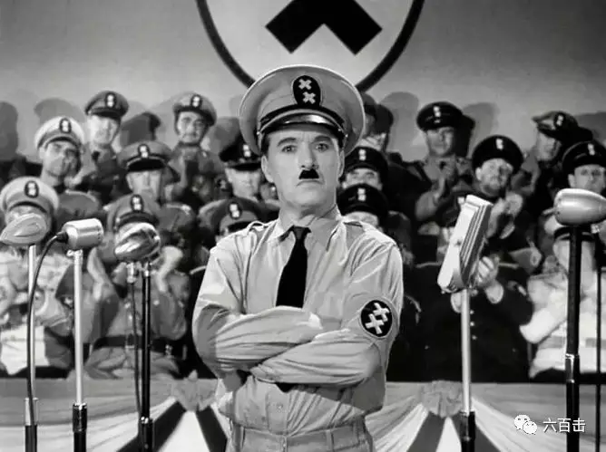
辛格尔言行举止简直是希特勒的翻版，不仅仅是希特勒，你可以在电影中的角色里找到墨索里尼、戈培尔等纳粹领袖。
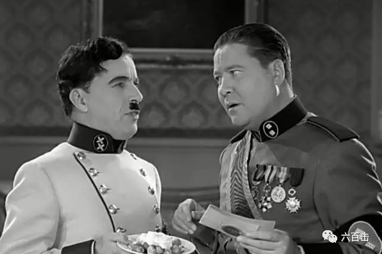
卓别林对这些残暴的ducai者进行了辛辣的嘲讽，在电影里，纳粹的万字符标识变成了两个叉叉。
本来严肃庄重的“纳粹手礼”因为两位领袖对不上节奏而变得滑稽可笑。
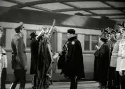
两位领袖在饭桌上，更是有失领袖“风度”。
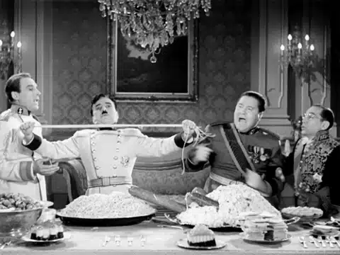
卓别林通过凳子来形象展现两人明争暗斗的权利欲望。
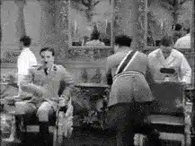
大ducai者黏贴信封的方式也是有点“特别”。
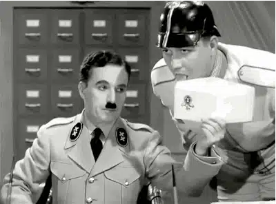
更加有趣的是，卓别林模仿着希特勒的语气和表情，却在一本正经的胡说八道，里面夹杂了德语、英语还有连他自己都不知道意思的“外星语”。
你可以听到德语的“炸小牛肉片”（schnitzel）、“泡菜”（sauerkraut）和“肝泥香肠”（leberwurst）和英文词组例如“cheese'n'crackers”和“larger beer”
卓别林竟然用这些可爱的词语发表严肃的政治言论，无法想象希特勒后来看完后是什么样的表情。
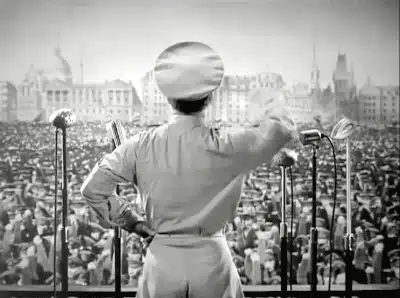
而最有趣的是大ducai者用地球仪跳的芭蕾舞，画面真是辣眼睛，希特勒的ducai梦原来这么可笑！
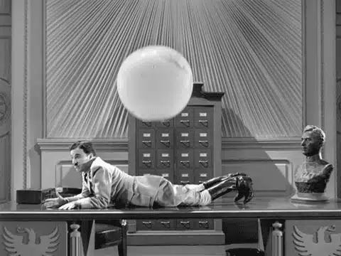
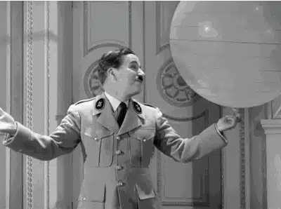
在大ducai者的暴政下，由卓别林饰演的理发师查理深受其害，因为他是犹太人，卓别林用很夸张的方式来表现身边人对他的避而远之。
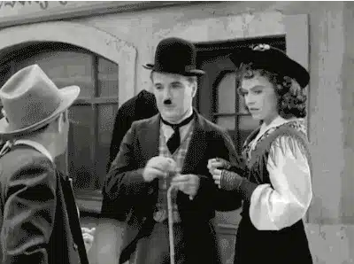
这是一个典型的流浪汉夏尔洛形象，动作滑稽可爱，查理伴随着勃拉姆斯第五匈牙利舞曲，为顾客剃头
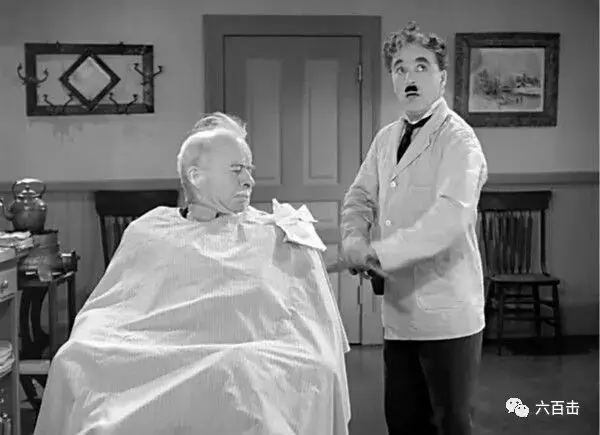
他看上去很傻，但是为了喜欢的姑娘总会不顾一切。
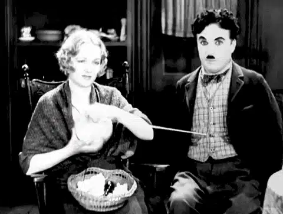
查理总是心存善良，一次空难中，他救了一位政府官员。
在迫害逐渐加深的这段时间里，这位官员节节高升，当查理要逃脱被迫征兵的时候，查理被士兵抓捕，这时恰好遇到了这位官员。
为了报答救命之恩，官员放走了查理，当查理马上要逃离国界的时候，士兵将查理错认为大ducai者。
查理将错就错，向成千上万的士兵发表了歌颂自由的演讲，演讲长达7分钟，整个过程激情滂湃，一气呵成，成就了影史的经典。
卓别林为了完美再现希特勒的形象，他观摩了很多遍《意志的胜利》。
除了自己的努力，饰演希特勒对于卓别林来说有天生的优势，因为两人本来就有很多相似之处。
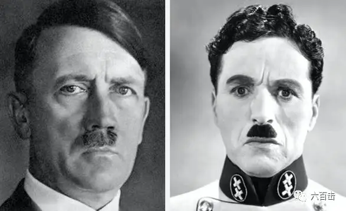
希特勒和卓别林出生时间之差四个月，两人都出生于社会中下层，童年都饱受困难和挫折。
不仅经历很像，他们的身高也相似，而希特勒特色的小胡子更是与卓别林饰演的经典形象不谋而合。
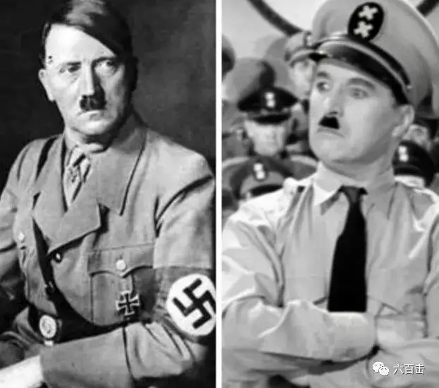
所以，曾经有漫画家戏谑：希特勒与卓别林之间只相差了一顶帽子。
但是相差的这顶“帽子”却将希特勒钉在了历史的耻辱柱上，而卓别林却收获了最大的尊重和礼赞。
虽然后来卓别林因为电影强烈的政治性而被美国、英国冷待甚至驱赶。
但是时间和历史告诉所有人，卓别林如此关注政治并不是极端，而是关心正义。
当卓别林于1972年末因他对“本世纪的电影艺术所做出的不可估量的贡献”获得了第二次荣誉奖时。
卓别林重返美国，除了获奖外他还获得了奥斯卡金像奖历史上最长的起立致敬。
在明星群聚的会场内观众整整起立鼓掌了五分钟。
1972年，卓别林获奖泪流满面，观众掌声不停
在纳粹最黑暗的时候，卓别林发出的声音是那样的振奋人心，希望他的演讲能够带给我们启发（因特殊原因，只能图片）：
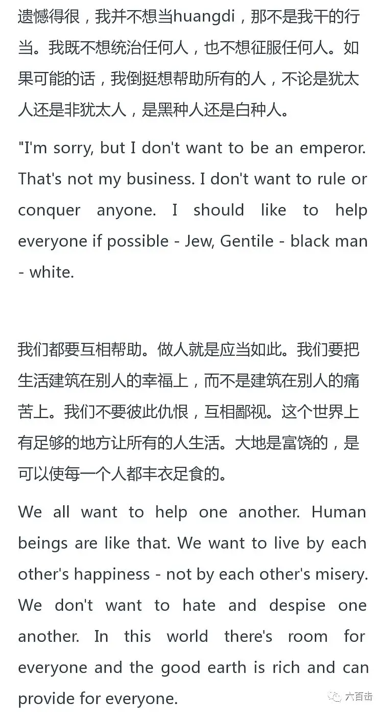
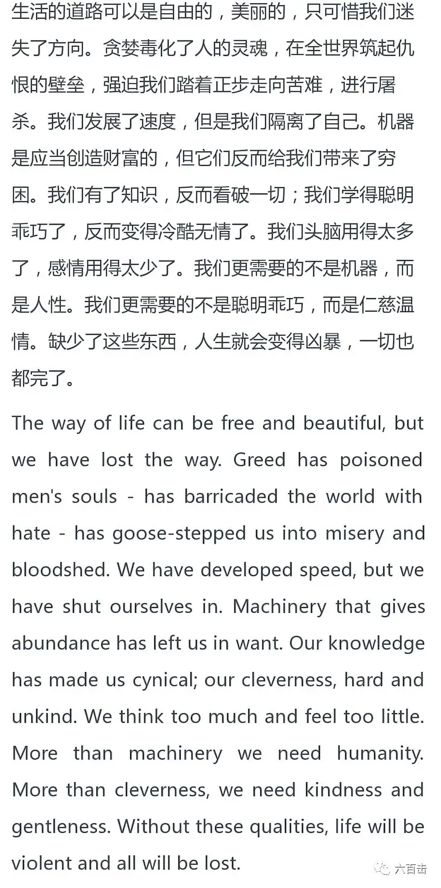
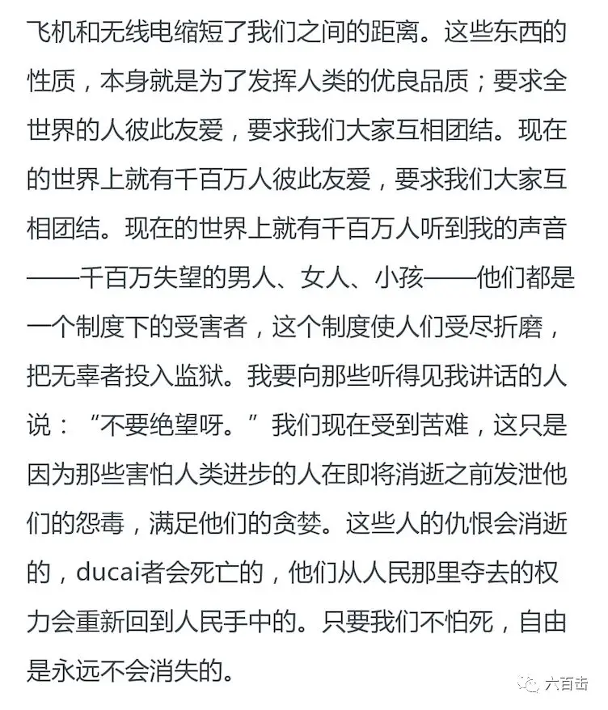
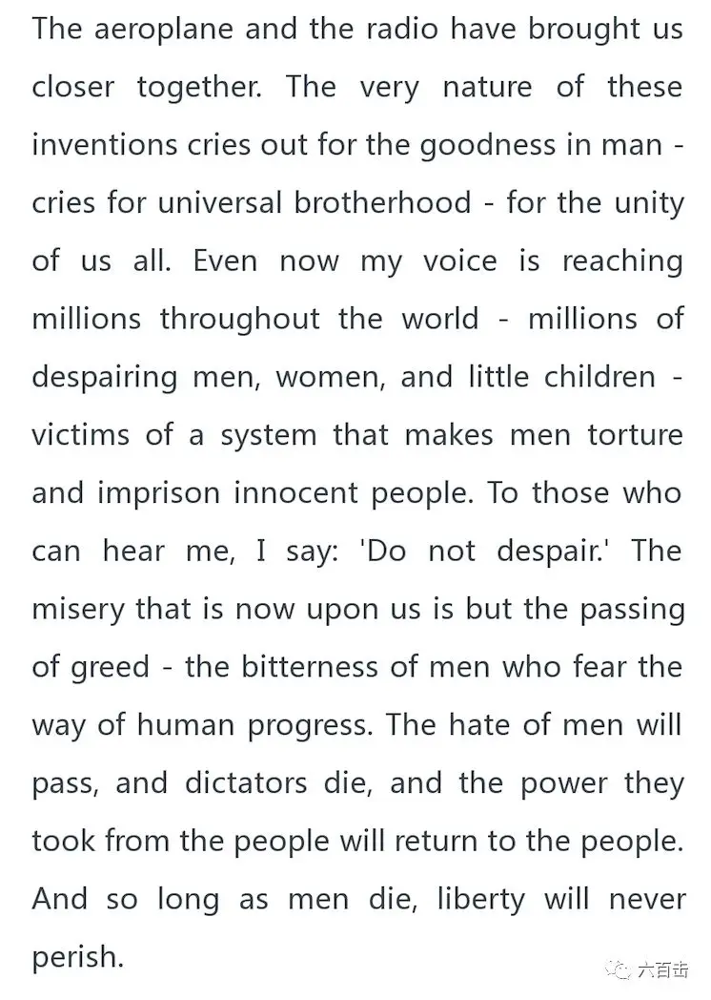
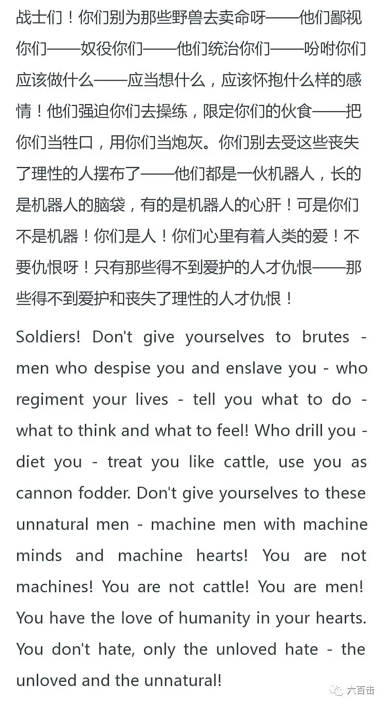
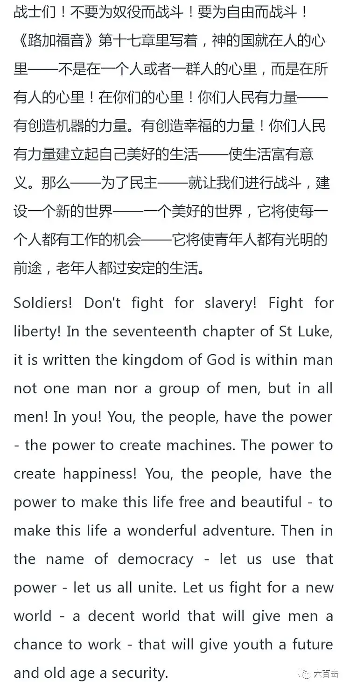
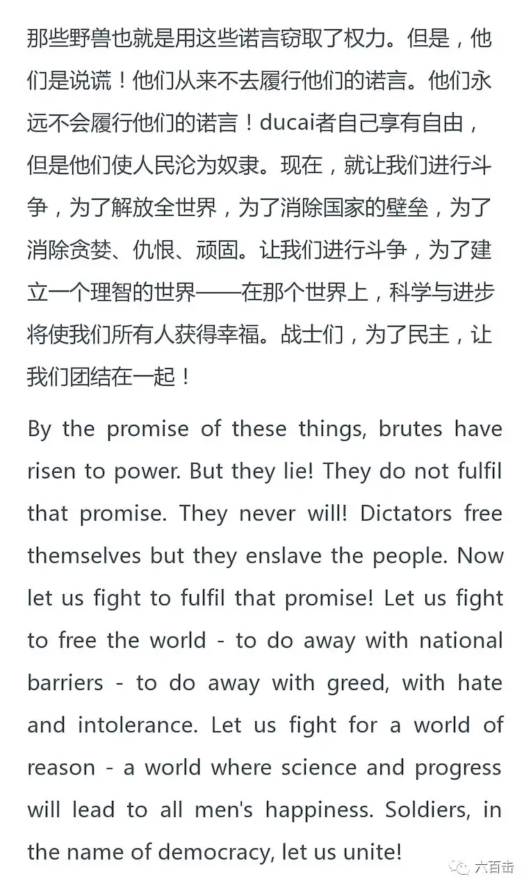
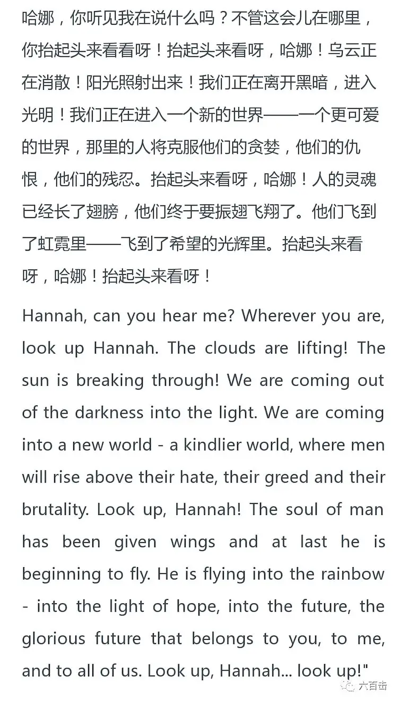
关注并回复：大独裁者
获取电影资源
相关推荐：
光影圣徒罗伯特.布列松 | 他是最伟大的法国导演，是大师中的大师
《超脱》| 我的灵魂失语了
官方说法
100双绝望的眼睛
这里没有挑逗你眼目情欲的小鲜肉
也没有挑动你肉体情欲的段子
更没有膨胀你今生骄傲的鸡血
我们只在乎那些最质朴真诚的作品
在那里我们才能恢复真正的想象力
我们也坚信这才是我们真正需要的

ID:Six_hundred_hits
长按二维码，一键关注
【六百击】
-END-
电影评论
尽情分享朋友圈

苹果打赏通道